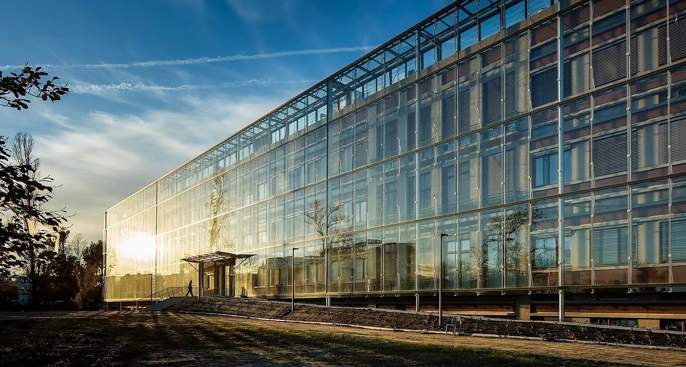

L'Analyse du Cycle de Vie, pierre angulaire de notre approche
Méthode normée ISO 14040-44, l'ACV est la référence en comptabilité environnementale. Elle permet de quantifier les impacts de vos processus sur tout leur cycle de vie.
ACV ISO 14040/44
Études conformes aux normes internationales pour évaluer les impacts environnementaux
Éco-conception
Arbitrer entre indicateurs d'impacts : réchauffement climatique, particules fines, toxicité humaine
Formations & R&D
Ateliers pratiques et projets innovants en collaboration avec l'ADEME et le milieu académique
Les avantages de l'Analyse du Cycle de Vie
Holistique
Étude des impacts sur tout le cycle de vie, de l'extraction des matières premières à la fin de vie.
Multicritère
Arbitrage entre différents indicateurs : réchauffement climatique, particules fines, toxicité humaine…
Chiffrée et objective
Résultats quantitatifs sans jugement de valeur, fournissant un chiffrage objectif des impacts potentiels.
Normée et internationale
Encadrée par les normes ISO 14040-44 pour éviter le bricolage et les estimations imprécises.
L'analyse du cycle de vie permet de revisiter les pratiques des laboratoires et de redonner du sens aux métiers
Nous réalisons des ACV pour tous les secteurs
Bien que spécialisés en chimie analytique, nous sommes capables d'étudier tout service ou produit. Nous sommes également disponibles pour des revues critiques.
Chimie
Agro-alimentaire
Bâtiments, BTP
Automobile
Santé, pharma
Textile
Parfumerie, cosmétique
Packaging
Vins & spiritueux
Laboratoires

Nous participons activement à la recherche en ACV
En partenariat avec l'Université de Bordeaux, nous publions des travaux de recherche sur l'application de l'ACV à la chimie analytique. Nos publications sont en libre accès dans des journaux à comité de lecture.
C'est cette activité de recherche qui nourrit directement nos prestations et nos formations — un pont permanent entre science et terrain.
J'ai besoin d'une ACV →Améliorez la performance environnementale de vos activités
Que ce soit pour une ACV complète, une revue critique ou de l'éco-conception, nous sommes à votre disposition.
Nous contacter →